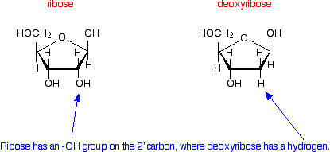
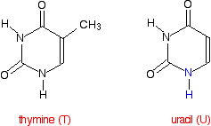
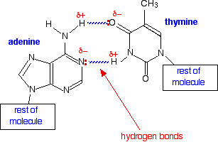
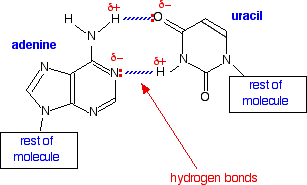
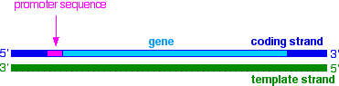
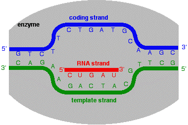
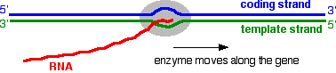

|
TRANSCRIPTION - FROM DNA TO RNA This page takes a simple look at the structure of RNA and how the information in DNA is used to make messenger RNA. It is designed for 16 - 18 year old chemistry students, and if you are doing biology or biochemistry, you will probably need more detail than this page gives. | ||
|
Note: If you have come straight to this page from a search engine), you should be aware that this is the third page in a sequence of pages about DNA. These pages are written to be read one after the other, so unless you already understand the structure of DNA, follow this link to start from the beginning. | ||
|
The structure of RNA The function of messenger RNA in the cell You will probably know that the sequence of bases in DNA carries the genetic code. Scattered along the DNA molecule are particularly important sequences of bases known as genes. Each gene is a coded description for making a particular protein. | ||
|
Note: It would be more accurate to say that each gene coded for a particular polypeptide, because some proteins are made of more than one polypeptide chain. For simplicity, I'm going to refer from now on to the synthesis of a protein, rather than a polypeptide - it sounds less scary! To be really accurate, some genes code for other sorts of molecule apart from proteins, but we are only going to be looking at the genes involved in protein synthesis. | ||
|
Getting from the code in DNA to the final protein is a very complicated process. The code is first transcribed ("copied", although with one important difference - see later) to messenger RNA. That then travels out of the nucleus of the cell (where the DNA is found) into the cytoplasm of the cell. The cytoplasm contains essentially everything else in the cell apart from the nucleus. Here the code is read and the protein is synthesised with the help of two other forms of RNA - ribosomal RNA and transfer RNA. We'll talk a lot more about those in a later page. I'm going to take this complicated process very gently - a bit at a time! How does messenger RNA differ from DNA? There are several important differences. Length RNA is much shorter than DNA. DNA contains the code for making lots and lots of different proteins. Messenger RNA contains the information to make just one single polypeptide chain - in other words for just one protein, or even just a part of a protein if it is made up of more than one polypeptide chain. Overall structure DNA has two strands arranged in a double helix. RNA consists of a single strand. The sugar present in the backbone of the chain DNA (deoxyribonucleic acid) has a backbone of alternating deoxyribose and phosphate groups. In RNA (ribonucleic acid), the sugar ribose replaces deoxyribose. If you have read this sequence of pages from the beginning, you will already have come across the difference between these two sugars. But to remind you . . .  The only difference is the presence of an -OH group on the 2' carbon atom in ribose. | ||
|
Note: If you don't understand what 2' means, you obviously haven't read the first page in this sequence of pages. It's a bad idea trying to take short cuts with this! | ||
|
RNA uses the base uracil (U) rather than thymine (T) The structure of uracil is very similar to that of thymine.  The nitrogen shown in blue in the uracil is the one which attaches to the 1' carbon in the ribose. In the process, the hydrogen shown in blue is lost together with the -OH group on the 1' carbon in the ribose. The only difference between the two molecules is the presence or absence of the CH3 group. Uracil can form exactly the same hydrogen bonds with adenine as thymine can - the shape of the two molecules is exactly the same where it matters. Compare the hydrogen bonding between adenine (A) and thymine (T):  . . . with that between adenine (A) and uracil (U):  In DNA the hydrogen bonding between A and T helps to tie the two strands together into the double helix. That isn't relevant in RNA because it is only a single strand. However, you will find several examples in what follows on this and further pages where the ability of adenine (A) to attract and bond with uracil (U) is central to the processes going on. The base pairing of guanine (G) and cytosine (C) is just the same in DNA and RNA. So in RNA the important base pairs are:
Transcription Transcription is the name given to the process where the information in a gene in a DNA strand is transferred to an RNA molecule. The coding strand and the template strand of DNA The important thing to realise is that the genetic information is carried on only one of the two strands of the DNA. This is known as the coding strand. The other strand is known as the template strand, for reasons which will become obvious is a moment. | ||
|
Note: These two strands are often given other names as well, sometimes in a very confusing way (at least to a non-biochemist!). The two terms coding and template are commonly used, and seem to me to best describe the function of the two chains. | ||
|
The coding strand The information in a gene on the coding strand is read in the direction from the 5' end to the 3' end. Remember that the 5' end is the end which has the phosphate group attached to the 5' carbon atom. The 3' end is the end where the phosphate is attached to a 3' carbon atom - or if it is at the very end of the DNA chain has a free -OH group on the 3' carbon. You may remember this diagram of a tiny part of a DNA chain from the first page in this sequence:
If the left-hand chain was the coding chain, the genetic code would be read from the top end (the 5' end) downwards. The code in this very small fragment of a gene would be read as ". . . A T T G C . . .". The template strand The template strand is complementary to the coding strand. That means that every A on the coding strand is matched by a T on the template strand (and vice versa). Every G on the coding strand is matched by a C on the template strand (and again vice versa). If you took the template strand and built a new DNA strand on it (as happens in DNA replication), you would get an exact copy of the original DNA coding strand formed. Almost exactly the same thing happens when you make RNA. If you build an RNA strand on the template strand, you will get a copy of the information on the DNA coding strand - but with one important difference. In RNA, uracil (U) is used instead of thymine (T). So if the original DNA coding strand had the sequence A T T G C T, this would end up in the RNA as A U U G C U - everything is exactly the same except that every T had been replaced by U. The transcription process Finding the start of the gene on the coding strand Transcription is under the control of the enzyme RNA polymerase. The first thing that the enzyme has to do is to find the start of the gene on the coding strand of the DNA. Remember that DNA has lots of genes strung out along the coding strand. That means that the enzyme has to pick the right strand and identify the beginning of each gene. It does this by recognising and binding with one or more short sequences of bases "upstream" of the start of each gene. "Upstream" means that it is slightly closer to the 5' end of the DNA strand than the gene. These base sequences are known as promoter sequences.  Remember that the two strands of DNA are hydrogen bonded together. You can think of the enzyme as being wrapped around both strands. In fact, the enzyme is big enough to enclose not only the promoter sequence but the beginning of the gene itself. Transcribing the gene and making the RNA Once the enzyme has attached to the DNA, it unwinds the double helix over a short length, and splits the two strands apart. This gives a "bubble" in which the coding strand and template strand are separated over the length of about 10 bases. The next diagram shows the enzyme in the process of starting to make the new RNA strand.  New nucleotides are added to the growing RNA chain at the 3' end. The next nucleotides to be added in the example here would contain the bases G and then C. The new G in the RNA would complement the C below it in the template strand. Next after that in the template strand is a G. That would be complemented by a C in the growing RNA. | ||
|
Note: Remember that a nucleotide contains the base attached to a sugar (in this case, ribose) which is attached to a phosphate group. The ribose and the phosphate add to the backbone of the RNA chain with the bases hanging off that backbone. | ||
|
Now compare the bit of RNA with the coding strand directly above it. Apart from the fact that every thymine (T) is now a uracil (U) instead, the chains are identical. Now the enzyme moves along the DNA, zipping it up again behind it. Essentially it moves the bubble along the chain, adding new nucleotides all the time. The growing RNA tail becomes detached from the template strand as the enzyme moves along.  How does the enzyme know where to stop after it reaches the end of the gene? You will remember that it recognises the beginning of the gene by the presence of a promoter sequence of bases upstream of the start. After the end of the gene ("downstream" of the gene), there will be a termination sequence of bases. Once the enzyme gets to those, it stops adding new nucleotides to the chain and detaches the RNA molecule completely from the template chain. So . . . we've produced a molecule of messenger RNA - so called because it is now going to carry the genetic code (the message) out of the nucleus of the cell to the cytoplasm where protein synthesis can take place. Before we look at how that synthesis works, we need to stop and consider the nature of the code itself. That's on the next page in this sequence.
© Jim Clark 2007 (modified May 2016) |
||